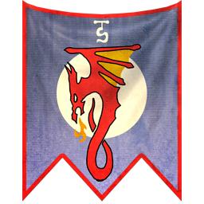
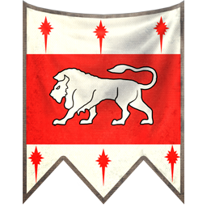

"We are the chosen of Asuryan, beloved of the gods and heirs to the world. Our armies are the finest in creation; swift where our foes are lumbering, cultured where they are barbaric. Give no thought to failure, nor defeat – we are the Children of Ulthuan and we shall prevail."
The High Elves, the Eldest Race, or the Asur as they call themselves, are one of the most ancient and powerful mortal civilisations within the Warhammer World. Hailing from a mighty mist-shrouded island-continent located within the centre of the Great Ocean, the High Elves of Ulthuan are a proud and mighty nation of masterful warriors, peerless mages and lords of the sky and sea. They are an ancient race with powerful armies and even grander magic, building a grand and all-mighty civilisation who, alongside the Dwarfs, fought a long-forgotten, apocalyptic war which saw some of the greatest and most powerful mortal heroes battle against the great darkness that tried to consume the world many thousands of years ago. At the zenith of their power, the world was truly theirs for the taking. Yet their noble and compassionate nature, which was once one of the Elves greatest and most noble character was soon replaced by a great sense of pride and hubris in their own vanity and superiority. In their blind arrogance, they’ve only succeeded in shattering their once powerful friendship with the Dwarfs, culminating in a Great War which only crippled these two elder races and shattered whatever bright future there was for this young world. Isolated and alone in a world they no longer control, the High Elves are facing the twilight years of their existence, their cities no longer bustling with vibrancy and life as they used to be but now serve as a gloomy reminder of their ultimate, impending demise. The time of the High Elves has passed, or so it is said, yet such is their immense pride that they fight on nonetheless, for they consider themselves the true and rightful protectors of this ancient world, and they believe that so long as their civilisation persist throughout the ages, this dying world will never fall into complete darkness. If oblivion is indeed to be their fate, they have chosen to face it with arrow nocked and sword held high, defending the world they have loved and protected for so long. So do the white-garbed hosts of Ulthuan march to war, banners streaming in the wind and every warrior reconciled to death in service of a greater cause; the protection of this very world. Let the servants of destruction beware their righteous wrath.
"The noble families have led our people through times of peace and conflict for thousands of years. They pride themselves on their deep sense of honour and mastery of both the arts of diplomacy and war, taught to them from a young age. In times of conflict they demonstrate this prowess through their flexibility, perfectly capable of fighting with unmatched skill in the thick of the melee, or commanding our armies from a distance, directing the flow of battle as need dictates."
Ulthuan politics
Ulthuan is ruled by a collection of princes, princesses and mages, above whom preside the Phoenix King and the Everqueen. The relationship between these rulers is not as simple as the titles would suggest. The kingship is elective while the queenship is hereditary, and both monarchs maintain entirely separate courts. The Everqueen is always the Queen of Avelorn. Her realm is the site of the principal shrine of the Earth Mother, and she is regarded as the spiritual leader of the whole Elven realm. The position of Everqueen is always taken up by the firstborn daughter of the previous queen, conceived during her year-long ritual marriage to the Phoenix King. After this formal marriage, they are free to take new consorts, but only the daughter conceived from the marriage of the Phoenix King and the Everqueen can be the new Everqueen. Hence the Queens of Avelorn have always been the Everqueens of Ulthuan, forming an unbroken chain from ages past. By contrast, the Phoenix King is chosen from among the princes of Ulthuan, one year after the death of the previous incumbent. Each is crowned during a holy ceremony, held at the massive pyramidal Shrine of Asurian and attended by the legions of the Phoenix Guard and the princes of Ulthuan. The process of choosing the new Phoenix King is rife with intrigue. Traditionally, the last thirty days of the year of mourning are set aside for the election to take place; however, in practice the debate starts much sooner than that. Often, the politicking starts long before the reigning Phoenix King has died. High Elves love intrigue, and never is the prize greater than when a new Phoenix King is chosen. The grandest of Ulthuan’s noble families each look for their candidate to be chosen, and they vie for the support of their peers for their choice. Further to this, each realm in Ulthuan desires the new Phoenix King to be chosen from their land. So it is that rivalries are set aside — or created — to ensure that the agendas of the noble houses are met. For all the deception, manipulation and chicanery employed during the election process, it is almost unheard of for the tactics employed to escalate to violence or outright sabotage. Such actions are considered heretical, for the Phoenix King is the anointed servant of Asuryan. Few High Elf nobles are so consumed with victory that they could believe, even for a moment, that the Creator God would ever approve of a King selected by the ruling council under such dubious and destructive circumstances. Outside of this monarchical structure, Ulthuan is comprised of Ten independent realms, each ruled by its own princes. Each of these realms form into two distinct geography, the Outer and Inner Kingdoms. The former are those whose shores touch the ocean, while the latter are those that surround the Inner Sea. The Inner and Outer Kingdoms are divided by the cloud-piercing Annulii Mountains.
Kingdoms
Inner Kingdoms
The Inner Kingdoms set within the twilit ring of the Annulii, are shielded from contact with the outer world by the mountains that surround them and the buffer states of the Outer Kingdoms. Many of the inhabitants of the inner lands are introverted and dreamy. They make scholars, mystics and sorcerers without peer. Those kingdoms are:
- Kingdom of Eataine
- Kingdom of Caledor
- Kingdom of Ellyrion
- Kingdom of Avelorn
- Kingdom of Saphery
|  | ||||
| Banner of Eataine | Banner of Caledor | Banner of Ellyrion | Banner of Avelorn | Banner of Saphery |
Inner Kingdoms
The Outer Kingdoms are the Elven realms that line the coast of Ulthuan’s outer shores which borders the Great Ocean. Unlike the relative safety of Ulthuan’s Inner Kingdoms, the lands of the Outer Kingdoms are open to hostile invasions, either from their dark relatives to the West or Chaotic barbarian warriors of the East. As such, the inhabitants of these lands have replaced their books and poems with swords and bow, and are perhaps the most warlike of their civilisation. Those kingdoms are:
- Kingdom of Tiranoc
- Kingdom of Nagarythe
- Kingdom of Cothique
- Kingdom of Chrace
- Kingdom of Yvresse
 |
 | |||
| Banner of Tiranoc | Banner of Nagarythe | Banner of Cothique | Banner of Chrace | Banner of Yvresse |
Military
"For five thousand years we have defended our shores from all who would conquer us. Even in our darkest hour, when our own kin rose up and betrayed us, we fought with such determination and martial skill that they were vanquished. But before you do this, you must understand how to command your army. To conduct its many diverse parts into a symphony of destruction. To weave the potent sorceries of your battle mages with the rain of deadly shafts from our archers. To form an impregnable line of spears from which the armoured might of your cavalry can leap to smash the foe. And if you learn all these things, then and only then, will you be a true prince..."
The High Elves’ existence is one of eternal battle, fought with a courage and skill that only they possess. But it is a war that, little by little, is being lost. The High Elves fade, whilst their enemies multiply, and each death is a loss that the Ten Kingdoms of Ulthuan can ill afford. Yet it is not in the High Elves’ proud nature to pass peacefully from history. When the Phoenix King issues the call to war, his people gladly answer. Disciplined spearmen form up in silence, their brilliant banners of lion, horse and eagle fluttering in the wind. Haughty knights ride alongside, their steeds reacting instantly to unspoken commands. Mages prepare intricate spells, archers gauge the gusting wind and, in the skies above, mighty Dragons and Phoenixs wheel and soar, ready to fight to the last alongside their Elven allies. In matters of war and politics, the High Elves, true to their prideful nature, have only ever cared about the protection of the world, yet not those innocents that live within it. Whilst the High Elves consider themselves defenders and protectors, that calling doesn’t necessarily extend to the protection of other races. Only a relative handful of High Elves see the lesser races as something worth protecting — and even they believe that these races must occasionally be saved from themselves. The rest, at their most generous, consider foreigners an additional set of defences with which to preserve Ulthuan, living fortress walls to be reinforced or abandoned as the larger scheme of battle dictates. This is not to say that the High Elves never fight alongside other races, but it is true that such alliances seldom come about save through the intervention of exceptional and foresighted individuals. Few amongst the other races see the High Elves’ mission for what it is, so blinded are they by their own petty concerns and suspicions. To them, the folk of Ulthuan are merely another power jockeying for pre-eminence through the channels of trade, diplomacy and war. They have not the wit to see that if the High Elves choose to trade with another race, it is not out of a desire for coin or armaments. There are treasures beyond the dreams of avarice in the vaults of even Ulthuan’s meanest mansion, and the armouries of its kingdoms contain ten times as many enchanted weapons than there are Elves to wield them. However, the High Elves know trade to be something that others welcome and understand, and so use it to gather information and position spies. Likewise, the High Elves find the tongues of other races to be leaden and boorish, and so only engage in overseas politicking if it factors into their wider goals. Even in matters of war, the High Elves seldom commit themselves unless it will substantially benefit their cause. The armies of Ulthuan are amongst the mightiest weapons any ruler could hope to wield, but the world is vast, and they cannot be everywhere at once. Every battle, whether it be a skirmish between warbands, a clash of armies or the siege of a great city, is fought because it will shift the balance between the order the High Elves seek to maintain and the destruction caused by the onset of Chaos. Not all such battles are fought directly with the forces of the Dark Gods. Though they know it not, rampaging greenskins, meddling Men and needlessly stubborn Dwarfs can undermine the High Elves’ quest for order, simply through their unthinking deeds. As a consequence, the blades of Ulthuan must be carried against the warriors of many lands — if the ignorant must be slaughtered to deny the truly wicked, then so be it. The war that the High Elves fight is a desperate one, with no ultimate victory in sight. The forces of Chaos are endless and eternal, whilst the High Elves dwindle daily. There may yet come a time when all of Ulthuan’s blood has been spent, and the world is left bare before the predations of hungry gods. That day may yet be long away, but every battle, won or lost, brings it closer.